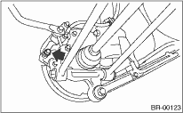
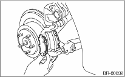

1. Set the vehicle on a lift.
2. Loosen the wheel nuts.
3. Lift up the vehicle, then remove the rear wheels.
4. Remove the lower caliper bolts.

5. Raise the caliper body and support it.
NOTE:
Brake hose must not be disconnected from caliper body.
6. Remove the pad.
NOTE:
If it is difficult to remove the brake pad, use the same procedure as front disc brake pad.

